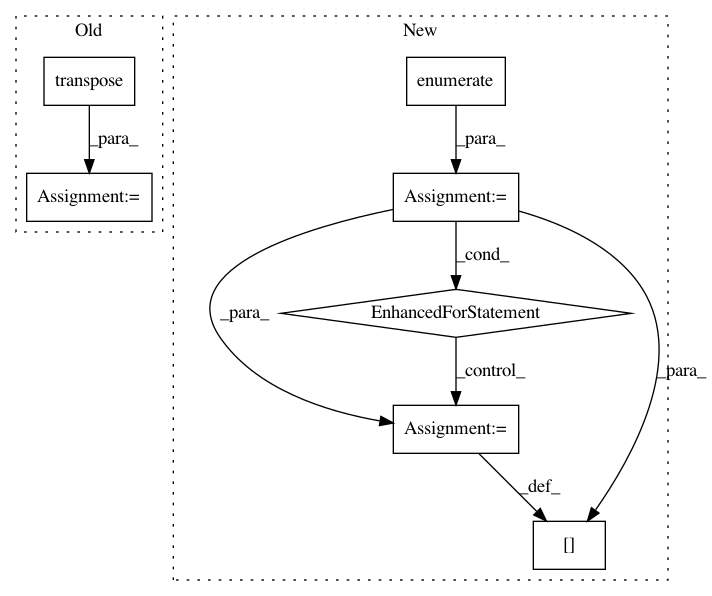

3df2eaf74d8f2299ca05e3e98cab5bf89dafc249,cnn_visualisation.py,,preprocess_image,#Any#,91
Before Change
for i in range(3):
preprocessed_img[:, :, i] = preprocessed_img[:, :, i] - means[i]
preprocessed_img[:, :, i] = preprocessed_img[:, :, i] / stds[i]
preprocessed_img = \
np.ascontiguousarray(np.transpose(preprocessed_img, (2, 0, 1)))
preprocessed_img = torch.from_numpy(preprocessed_img)
preprocessed_img.unsqueeze_(0)
input = Variable(preprocessed_img, requires_grad=True)
return input
After Change
// Transpose to obtain D-W-H
im_as_arr = im_as_arr.transpose(2, 0, 1)
// Normalize the channels
for channel, _ in enumerate(im_as_arr):
im_as_arr[channel] /= 255
im_as_arr[channel] -= mean[channel]
im_as_arr[channel] /= std[channel]
// Convert to float tensor
im_as_ten = torch.from_numpy(im_as_arr).float()
// Add one more channel to the beginning. Tensor shape = 1,3,224,224
im_as_ten.unsqueeze_(0)
// Convert to Pytorch variable
In pattern: SUPERPATTERN
Frequency: 3
Non-data size: 7
Instances
Project Name: utkuozbulak/pytorch-cnn-visualizations
Commit Name: 3df2eaf74d8f2299ca05e3e98cab5bf89dafc249
Time: 2017-10-24
Author: utku.ozbulak@gmail.com
File Name: cnn_visualisation.py
Class Name:
Method Name: preprocess_image
Project Name: deepchem/deepchem
Commit Name: c96af58e6ab2f85626e51a331e8479da49329f0e
Time: 2017-01-18
Author: joegomes@stanford.edu
File Name: deepchem/models/tensorflow_models/__init__.py
Class Name: TensorflowClassifier
Method Name: predict_proba_on_batch
Project Name: CellProfiler/CellProfiler
Commit Name: 02bb4ed03e72ddf68e6d1aa986f428baf0afe014
Time: 2020-08-17
Author: dstirling@broadinstitute.org
File Name: cellprofiler/modules/measuretexture.py
Class Name: MeasureTexture
Method Name: run_one